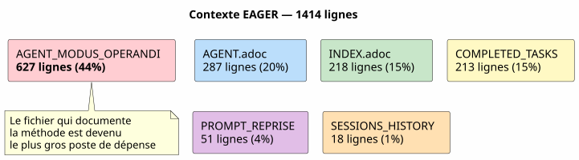
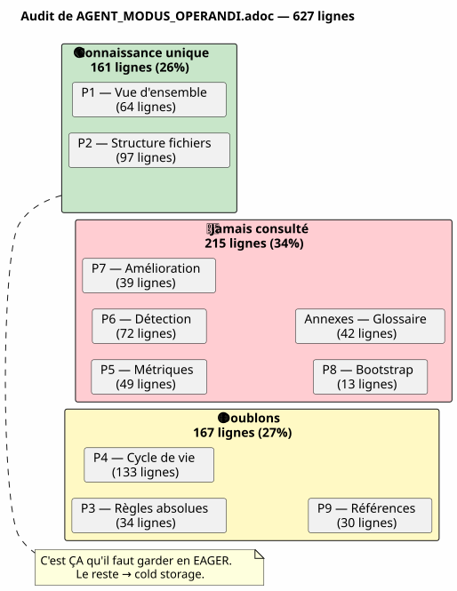
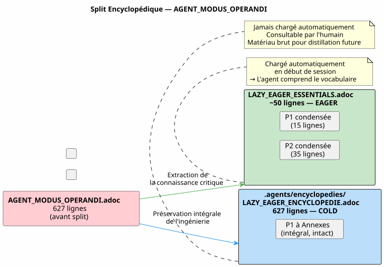
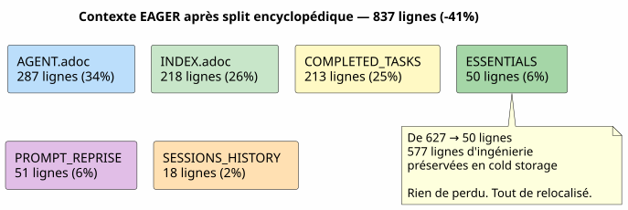
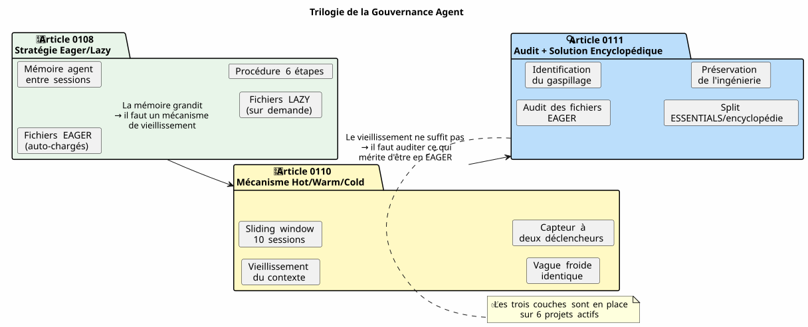
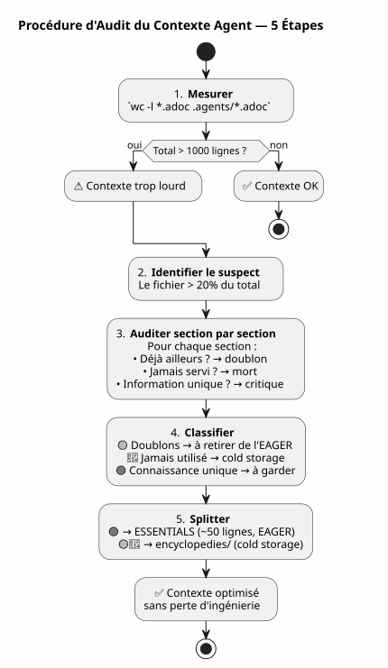
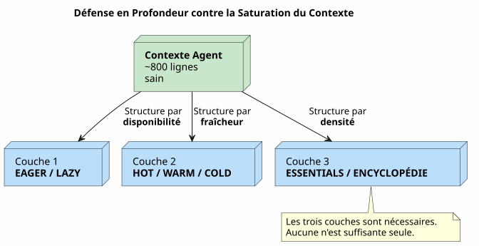

Audit de Contexte Agent : Quand Votre Propre Gouvernance Devient le Problème — et Comment la Réparer sans Rien Perdre
Publié le 27 April 2026
- 1. La scène : session 051, quelque chose cloche
- 2. L’audit : décortiquer les 627 lignes
- 3. La peur de perdre l’ingénierie
- 4. La solution : split encyclopédique
- 5. Le contenu du fichier ESSENTIALS
- 6. Le résultat : -50% de contexte EAGER
- 7. Pourquoi le dossier s’appelle
encyclopedies/ - 8. La suite logique de la série
- 9. Ce que j’aurais fait différemment
- 10. Le guide pour auditer votre propre contexte
- 11. Une gouvernance vivante
- 12. Liens
Vous avez passé des semaines à construire une gouvernance agent impeccable. Eager/Lazy, procédure de fin de session, backups rotatifs. Le système tourne. Puis un jour, l’agent devient lent. Les réponses sont diluées. Vous mesurez : 1414 lignes chargées automatiquement. Et le pire, c’est que le coupable n’est pas le code, ni le backlog, ni les archives de sessions. Le coupable, c’est le fichier qui documente votre méthode.
1. La scène : session 051, quelque chose cloche
30 avril 2026, 16h00. Je suis en pleine session sur magic_stick, mon projet de build d’ISO Linux live. L’agent Opencode a chargé automatiquement mes fichiers Eager comme d’habitude — AGENT.adoc, PROMPT_REPRISE.adoc, .agents/INDEX.adoc. Tout est normal.
Sauf que les réponses sont molles. L’agent met deux secondes de plus à raisonner. Il oublie un détail qu’il avait sous les yeux trois messages plus tôt. Ce n’est pas un crash, pas une erreur — c’est une dégradation lente, le genre qu’on ne remarque pas tout de suite.
J’avais déjà vécu ça à la session 048, quand j’avais découvert que les fichiers de gouvernance pesaient 5200 lignes cumulées. J’avais alors conceptualisé le mécanisme Hot/Warm/Cold avec sa sliding window de 10 sessions, ses vagues froides identiques, son capteur à deux déclencheurs. Le problème était réglé. En théorie.
Mais là, on est à la session 051. La rotation backup a bien eu lieu — les fichiers EAGER sont passés de 2087 à 500 lignes. Pourtant, le contexte reste lourd. Quelque chose m’échappe.
J’ouvre un terminal et je tape :
wc -l AGENT.adoc AGENT_MODUS_OPERANDI.adoc PROMPT_REPRISE.adoc \
.agents/INDEX.adoc .agents/SESSIONS_HISTORY.adoc \
.agents/archives/COMPLETED_TASKS_ARCHIVE_2026-04.adoc 287 AGENT.adoc
627 AGENT_MODUS_OPERANDI.adoc
51 PROMPT_REPRISE.adoc
218 .agents/INDEX.adoc
18 .agents/SESSIONS_HISTORY.adoc
213 .agents/archives/COMPLETED_TASKS_ARCHIVE_2026-04.adoc
1414 total1414 lignes. La rotation backup a bien taillé dans INDEX, SESSIONS_HISTORY et COMPLETED_TASKS — ils sont propres. Mais il y a un éléphant dans la pièce que je n’avais pas vu : 627 lignes dans un seul fichier. AGENT_MODUS_OPERANDI.adoc.
Ce fichier, c’est celui que j’ai écrit à la session 1 pour documenter la stratégie Eager/Lazy. C’est le manuel de la méthode. Et il est devenu, à lui seul, 44% du contexte EAGER.

L’ironie est totale. Le fichier conçu pour économiser du contexte est devenu le principal consommateur de contexte. C’est comme si le manuel d’utilisation de votre voiture pesait plus lourd que le moteur.
2. L’audit : décortiquer les 627 lignes
Je décide de faire un audit section par section. Pas pour supprimer — pour comprendre ce qui mérite d’être en EAGER et ce qui pourrait vivre ailleurs sans perte de connaissance.
Voici la structure exacte de AGENT_MODUS_OPERANDI.adoc et ce que j’y trouve :
| Section | Lignes | Contenu | Déjà présent dans… |
|---|---|---|---|
P1 — Vue d’ensemble |
64 |
Problème résolu, principes fondamentaux, analogie tableau de bord vs manuel |
— |
P2 — Structure des fichiers |
97 |
Arborescence, politique de chargement, quand charger quoi |
— |
P3 — Règles absolues |
34 |
Git interdit, commandes destructrices interdites, secrets interdits |
|
P4 — Cycle de vie session |
133 |
Template ouverture, règles de travail, 6 étapes fin de session, checklist |
|
P5 — Métriques et seuils |
49 |
Session idéale (15-30 min, 1-3 fichiers), signes d’alerte |
— |
P6 — Types de sessions |
72 |
Tableau de détection, format de proposition, exceptions |
— |
P7 — Amélioration continue |
39 |
Métriques de suivi, revue hebdomadaire |
— |
P8 — Checklist démarrage |
13 |
Bootstrap nouveau projet |
— |
P9 — Références |
30 |
Fichiers de référence, ressources externes |
|
Annexes A+B |
42 |
Glossaire, historique versions |
— |
Le verdict est sans appel :
-
Doublons intégraux (167 lignes) : P3, P4, P9 — tout est déjà dans
AGENT.adocouINDEX.adoc, souvent mot pour mot -
Jamais consulté en pratique (215 lignes) : P5, P6, P7, P8, Annexes — de la méta-gouvernance qui n’a jamais servi dans aucune session
-
Connaissance unique (161 lignes) : P1 et P2 — le vocabulaire LAZY/EAGER, l’analogie, la politique de chargement
Sur 627 lignes, 382 sont du bruit. Et ces 382 lignes sont chargées à chaque début de session, consommées par l’agent, diluant son attention avant même que je dise bonjour.

Ce diagramme est la clé de tout. Les doublons (jaune) sont du bruit pur — l’agent les lit deux fois, dans deux fichiers différents. Le jamais consulté (rouge) est de la documentation morte — écrite avec soin, jamais utilisée. Seul le vert contient de la connaissance que l’agent ne peut pas trouver ailleurs.
3. La peur de perdre l’ingénierie
À ce stade, j’ai l’évidence sous les yeux : je dois réduire AGENT_MODUS_OPERANDI.adoc. Mais j’hésite.
Ce fichier, je l’ai écrit à la main. Chaque section est le résultat d’une leçon apprise en session réelle. La partie P3 est née d’un rm -rf accidentel sur bakery-plugin qui m’a coûté des tokens Firebase réels. La partie P4 est le résultat de quinze sessions où j’oubliais d’archiver et je perdais le fil. La procédure en 6 étapes n’est pas sortie d’un livre — elle est sortie de la douleur.
Supprimer ces sections, ce serait jeter l’historique de ma propre ingénierie. Les leçons qui les ont produites, les sessions pendant lesquelles je les ai découvertes, les erreurs que je ne veux plus jamais refaire. Ce n’est pas du texte — c’est de l’expérience cristallisée.
C’est là que je formule le principe qui va guider la solution :
Ne jamais supprimer. Toujours relocaliser. La connaissance n’a pas à disparaître du projet. Elle a juste à ne pas être chargée automatiquement quand elle n’est pas nécessaire.
4. La solution : split encyclopédique
Le modèle que je propose est simple et s’inspire de la façon dont Wikipédia a grandi : quand un article devient trop long, on ne le coupe pas — on crée un article détaillé et on garde un résumé dans l’article principal.
Pour AGENT_MODUS_OPERANDI.adoc, cela donne :
-
Extraire les 161 lignes de connaissance unique (P1 + P2) dans un nouveau fichier
LAZY_EAGER_ESSENTIALS.adoc— compacté à ~50 lignes, strictement EAGER -
Renommer
AGENT_MODUS_OPERANDI.adocen.agents/encyclopedies/LAZY_EAGER_ENCYCLOPEDIE.adoc— le fichier original de 627 lignes, préservé intact, en cold storage -
Ne jamais charger le fichier encyclopédie automatiquement — il est là pour l’humain, pour la distillation future, pour l’agent qu’on invoquera dans six mois avec un meilleur modèle

Le nom encyclopedies/ n’est pas anodin. Une encyclopédie, ce n’est pas un dossier d’archives — c’est une collection de connaissance organisée, consultable mais pas portable. On ne lit pas l’Encyclopédie Universalis dans le métro. On la garde dans la bibliothèque, et on y va quand on a une question précise.
C’est exactement le rôle de ce dossier : une bibliothèque de référence froide, structurée, exhaustive — que l’agent ne touche pas automatiquement.
5. Le contenu du fichier ESSENTIALS
Voici à quoi ressemble concrètement le nouveau fichier LAZY_EAGER_ESSENTIALS.adoc, extrait et compacté à partir de P1 et P2 :
= Stratégie LAZY/EAGER — Principes Essentiels
[abstract]
Ce fichier définit la stratégie de gestion du contexte agent.
Chargé automatiquement (EAGER) en début de session.
== Principes
|===
| EAGER | LAZY
| Tableau de bord | Manuel du propriétaire
| Chargé automatiquement | Chargé sur demande
| <= 100 lignes, <= 10k tokens | Illimité, détaillé
| Règles absolues, mission courante | Archives, historique, références
|===
== Politique de Chargement
|===
| Fichier | Type | Quand charger
| PROMPT_REPRISE.adoc | EAGER | Début session (auto)
| *_ESSENTIALS.adoc | EAGER | Début session si EPIC active
| .agents/INDEX.adoc | EAGER | Début session (auto)
| *_REFERENCE.adoc | LAZY | Sur besoin (détails architecture)
| .agents/sessions/N-*.adoc | LAZY | Sur demande (détails session)
| .agents/encyclopedies/*.adoc | COLD | Jamais auto (humain seulement)
|===
== Comment l'Agent Sait Quoi Charger
Début session → PROMPT_REPRISE + INDEX + ESSENTIALS actifs.
Besoin de détails → charger les *_REFERENCE et sessions/ en LAZY.
Connaissance froide → encyclopedies/, jamais automatique.Cinquante lignes. C’est tout ce dont l’agent a besoin pour comprendre la mécanique. Tout le reste — l’historique des leçons, les analogies détaillées, les procédures pas à pas, les annexes — vit dans l’encyclopédie.
Et le plus important : rien n’a été supprimé. Les 627 lignes d’ingénierie sont toujours là, dans .agents/encyclopedies/LAZY_EAGER_ENCYCLOPEDIE.adoc. Elles sont juste rangées dans la bibliothèque plutôt que sur le plan de travail.
6. Le résultat : -50% de contexte EAGER
Avant le split :
287 AGENT.adoc
627 AGENT_MODUS_OPERANDI.adoc
51 PROMPT_REPRISE.adoc
218 .agents/INDEX.adoc
18 .agents/SESSIONS_HISTORY.adoc
213 .agents/archives/COMPLETED_TASKS_ARCHIVE_2026-04.adoc
1414 totalAprès le split :
287 AGENT.adoc
50 LAZY_EAGER_ESSENTIALS.adoc ← remplace 627 lignes
51 PROMPT_REPRISE.adoc
218 .agents/INDEX.adoc
18 .agents/SESSIONS_HISTORY.adoc
213 .agents/archives/COMPLETED_TASKS_ARCHIVE_2026-04.adoc
837 total ← -41%
Le plus gros consommateur (AGENT_MODUS_OPERANDI, 627 lignes) a été remplacé par un fichier de 50 lignes. Le gain est immédiat : 577 lignes de contexte libérées. L’agent respire.
Et dans .agents/encyclopedies/, le fichier original de 627 lignes attend. Intact. Avec toutes ses sections — y compris celles qui sont des doublons, y compris celles qui n’ont jamais servi. Parce qu’un jour, un meilleur modèle ou un data scientist humain voudra croiser ces angles, ces redondances assumées, ces leçons apprises. Et ce jour-là, la matière première sera là.
7. Pourquoi le dossier s’appelle encyclopedies/
Le choix du nom n’est pas cosmétique. Il encode la philosophie du mécanisme.
Une archive (archives/) contient des données historiques organisées chronologiquement — comme les COMPLETED_TASKS mensuels. Un backup (backup/) est un snapshot horodaté — une copie de sécurité d’un état passé.
Une encyclopédie, c’est autre chose. C’est une collection de connaissance thématique, structurée par sujet, exhaustive mais non linéaire. On ne lit pas une encyclopédie du début à la fin. On y plonge pour répondre à une question précise.
C’est exactement le contrat de ce dossier :
Dossier |
Rôle |
Accès |
Granularité |
|
Données historiques (tâches terminées par mois) |
LAZY, structuré |
Chronologique |
|
Snapshots froids (vagues de 10 sessions) |
COLD, copie intégrale |
Chronologique |
|
Connaissance thématique exhaustive (méthodologie, patterns) |
COLD, jamais auto |
Thématique |
Cette distinction évite le fourre-tout. Chaque fichier sait où il doit vivre selon ce qu’il contient, pas selon quand il a été créé.
8. La suite logique de la série
Si vous avez lu les deux premiers articles, voici comment les trois pièces s’emboîtent :

-
0108 répond à : « Comment donner une mémoire à l’agent entre deux sessions ? »
-
0110 répond à : « Comment empêcher cette mémoire d’étouffer l’agent ? »
-
0111 répond à : « Et si le problème n’est pas la taille des archives, mais ce qu’on a choisi de mettre en EAGER ? »
Le premier article a construit la structure. Le deuxième a ajouté le mécanisme de vieillissement. Le troisième audite le contenu — et découvre que la méthodologie elle-même est devenue le problème.
9. Ce que j’aurais fait différemment
Avec le recul, je vois l’erreur de conception initiale. AGENT_MODUS_OPERANDI.adoc a été créé comme un document unique — un manifeste. C’était la bonne approche pour formaliser la pensée. Mais une fois la pensée formalisée, le document aurait dû être splité immédiatement : l’essentiel en EAGER, l’exhaustif en cold.
Je ne l’ai pas fait parce que j’étais fier du document. 627 lignes d’ingénierie pure, écrites à la main, chaque section fruit d’une leçon de session. C’était mon œuvre. Et comme tout auteur, j’ai eu du mal à la découper.
La leçon : ce n’est pas parce qu’un document est bon qu’il doit être chargé automatiquement. La qualité du contenu n’a aucun rapport avec sa pertinence pour le contexte immédiat de l’agent.
Aujourd’hui, la règle est simple : tout document de plus de 100 lignes dans le contexte EAGER est un suspect. Il mérite un audit. Pas une condamnation — un audit. Et la question n’est jamais « faut-il le supprimer ? » mais « faut-il le charger à chaque session ? »
10. Le guide pour auditer votre propre contexte
Si vous avez suivi les deux premiers articles et mis en place votre propre gouvernance Eager/Lazy, voici une procédure d’audit en cinq étapes :
-
Mesurer :
wc -lsur tous vos fichiers EAGER. Le total devrait être sous 1000 lignes. -
Identifier le plus gros : le fichier qui pèse plus de 20% du total est le suspect numéro un.
-
Auditer section par section : pour chaque section, demandez-vous « Est-ce que cette information est déjà ailleurs ? Est-ce que l’agent l’a déjà lue dans un autre fichier ? Est-ce qu’elle a servi dans les 5 dernières sessions ? »
-
Classifier : doublon, jamais utilisé, connaissance unique.
-
Splitter ou relocaliser : ce qui est unique et critique → ESSENTIALS compacté. Tout le reste →
encyclopedies/.

Cette procédure prend 15 minutes. Sur un projet de 50 sessions, elle économise des centaines de tokens par session future. Le ROI est immédiat.
11. Une gouvernance vivante
Ce que cette série de trois articles m’a appris, c’est que la gouvernance agent n’est pas un produit fini. C’est un organisme vivant. Elle grandit avec le projet. Elle attrape des maladies de croissance. Elle nécessite des check-ups réguliers.
La session 048 a révélé que les archives gonflent. La session 051 a révélé que la méthodologie elle-même gonfle. La session 060 révélera probablement autre chose. C’est normal. C’est sain. Une gouvernance qui ne se remet jamais en question est une gouvernance morte.
Les trois mécanismes mis en place — Eager/Lazy, Hot/Warm/Cold, split encyclopédique — forment un système de défense en profondeur contre la saturation du contexte. Aucun n’est suffisant seul. Ensemble, ils se complètent :
-
Eager/Lazy structure l’information par disponibilité
-
Hot/Warm/Cold structure l’information par fraîcheur
-
Audit encyclopédique structure l’information par densité

Avec ces trois couches, le contexte agent sur magic_stick est passé de 2087 lignes (avant toute optimisation) à environ 800 lignes — une division par 2,6. Sans avoir perdu une seule ligne de documentation, une seule archive de session, une seule leçon apprise.
Tout est là. Juste mieux rangé.
12. Liens
-
Article 0108 — Stratégie Eager/Lazy : Gouverner un Agent IA avec du AsciiDoc
-
Article 0110 — Mécanisme Hot/Warm/Cold : Sliding Window et Vague Froide
-
Mon site : https://cheroliv.com
-
Le projet
magic_stick: https://github.com/cheroliv/magic_stick
La connaissance n’a pas à disparaître. Elle a juste à ne pas être chargée quand elle n’est pas nécessaire.